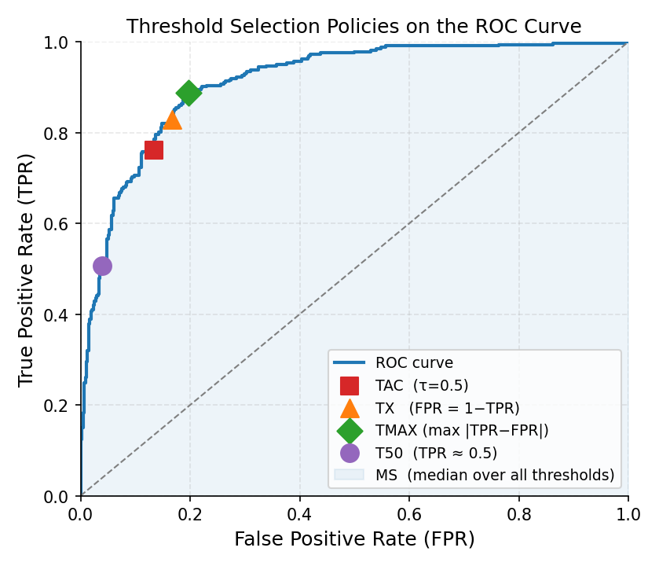

2.4. Adjusted Counting#
Adjusted counting methods correct the bias of naive counting by using what the classifier’s error rates reveal about the true class distribution. They are the oldest family of dedicated quantification methods (Forman, 2005) and remain strong baselines for binary problems.
Binary-only, multiclass via OvR
All methods on this page are fundamentally binary. When you apply them to a
dataset with more than two classes, mlquantify automatically decomposes
the problem into K one-vs-rest (OvR) binary subproblems and recombines
the results. Pass strategy='ovo' to use one-vs-one instead.
2.4.1. Problem formulation#
These methods target prior probability shift: between training and test the
class priors \(p(y)\) change while the class-conditional densities
\(p(x \mid y)\) stay fixed. Given a classifier trained on a labelled set
\(L\) and applied to an unlabelled test set \(U\), the goal is to
estimate the test prevalence \(p^U(c)\). The observed CC count is
a known linear function of the true prevalence through the classifier’s TPR and
FPR, so inverting that relationship recovers an unbiased estimate.
2.4.2. The Adjustment Formula#
All adjusted counting methods share the same core correction derived from the confusion matrix. Suppose a binary classifier has true positive rate TPR and false positive rate FPR (estimated on training data). If CC returns an observed positive proportion \(\hat{p}^{CC}\), the adjusted estimate is:
The methods below differ only in how they pick the threshold on the ROC curve at which TPR and FPR are read off. The formula itself is the same for all of them. (Forman, 2005, 2008)
{kind=link}

Each threshold-adjustment method picks a different operating point on the ROC curve. TAC uses τ=0.5 (red square); TX selects the symmetric crossing point (orange triangle); TMAX picks the point of maximum TPR−FPR separation (green diamond); T50 targets TPR≈0.5 (purple circle). MS sweeps the shaded area and takes the median.#
Why the formula works
Consider the population of test items. Each item can be truly positive or negative. The CC count can be decomposed as:
Solving for \(p(\oplus)\) gives the AC formula. The correction is exact when TPR and FPR are known; in practice they are estimated from cross-validated training predictions, so a small estimation error remains.
2.4.3. ACC — Adjusted Classify and Count (hard predictions)#
ACC applies the adjustment formula using the classifier’s argmax
(hard) predictions, rather than a soft-probability threshold. TPR and FPR
are computed by comparing the classifier’s hard labels against the true
training labels.
Why it exists: ACC is the “reference” adjusted-counting method described in Forman (2005). By deriving TPR/FPR from hard predictions it matches the behaviour expected from the theoretical derivation and avoids threshold selection entirely.
2.4.3.1. Parameters#
Parameter |
Default |
Explanation |
|---|---|---|
|
|
A classifier with |
|
|
Multiclass decomposition strategy ( |
|
|
Folds for cross-validating the confusion matrix. More folds → better TPR/FPR estimates but longer fitting. 5–10 is recommended. |
|
|
Use stratified folds to ensure rare classes appear in every fold.
Always leave |
|
|
Shuffle before splitting. Set |
|
|
Seed for reproducible splits. |
|
|
Parallel jobs for OvR/OvO decomposition. |
2.4.3.2. Examples#
from mlquantify.counting import ACC
from sklearn.linear_model import LogisticRegression
from sklearn.datasets import make_classification
from sklearn.model_selection import train_test_split
X, y = make_classification(n_samples=1000, weights=[0.8, 0.2],
random_state=42)
X_train, X_test, y_train, y_test = train_test_split(
X, y, test_size=0.3, random_state=42)
q = ACC(LogisticRegression(), cv=5)
q.fit(X_train, y_train)
print(q.predict(X_test))
# {0: 0.79, 1: 0.21}
2.4.4. ThresholdAdjustment — Base Class for ROC-Threshold Methods#
ThresholdAdjustment is the abstract base for all ROC-based adjusted
counting methods. Subclasses implement get_best_threshold to select
the threshold at which to evaluate TPR and FPR. The adjustment formula is
then applied at that chosen point.
You can subclass it to implement custom threshold-selection policies:
from mlquantify.counting import ThresholdAdjustment
import numpy as np
class HalfTPR(ThresholdAdjustment):
"""Select the threshold where TPR ≈ 0.5."""
def get_best_threshold(self, thresholds, tprs, fprs):
idx = np.argmin(np.abs(tprs - 0.5))
return thresholds[idx], tprs[idx], fprs[idx]
2.4.5. TAC — Threshold Adjusted Count (fixed threshold)#
TAC evaluates TPR and FPR at a fixed threshold (default 0.5)
and applies the AC formula at that single point.
Why it exists: TAC is the simplest threshold-adjustment method. It uses the natural decision boundary of the classifier without any search. It is often dominated by methods that pick a better threshold, but serves as a useful reference.
2.4.5.1. Parameters#
Parameter |
Default |
Explanation |
|---|---|---|
|
|
Probabilistic classifier ( |
|
|
The classification threshold at which TPR/FPR are evaluated. Change this when you know your classifier works better at a non-default cutoff (e.g. 0.3 for imbalanced classes). |
|
|
Folds for cross-validating soft scores used to build the ROC curve. |
|
|
See |
|
|
Multiclass decomposition. |
|
|
Parallel jobs for decomposition. |
2.4.5.2. Examples#
from mlquantify.counting import TAC
from sklearn.linear_model import LogisticRegression
q = TAC(LogisticRegression(), threshold=0.5)
q.fit(X_train, y_train)
print(q.predict(X_test))
# {0: 0.79, 1: 0.21}
2.4.6. TX — Threshold X (symmetric ROC point)#
TX selects the threshold where \(\text{FPR} = 1 - \text{TPR}\),
i.e., the intersection of the FPR curve and the (1 − TPR) curve. This
corresponds to the point on the ROC curve equidistant from both axes.
Why it exists: At this symmetric point the classifier makes a balanced tradeoff between false positives and false negatives, which tends to give a stable AC estimate. Forman (2005) found TX competitive across many benchmark tasks.
from mlquantify.counting import TX
from sklearn.linear_model import LogisticRegression
q = TX(LogisticRegression())
q.fit(X_train, y_train)
print(q.predict(X_test))
2.4.7. TMAX — Maximum TPR−FPR Separation#
TMAX selects the threshold that maximises \(|\text{TPR} - \text{FPR}|\),
which is the point of highest discriminative power on the ROC curve.
Why it exists: A large \(\text{TPR} - \text{FPR}\) gap makes the AC denominator large and keeps the adjusted estimate numerically stable. TMAX is useful when the classifier has a clear peak in discriminative power.
from mlquantify.counting import TMAX
from sklearn.linear_model import LogisticRegression
q = TMAX(LogisticRegression())
q.fit(X_train, y_train)
print(q.predict(X_test))
2.4.8. T50 — TPR ≈ 0.5 Threshold#
T50 selects the threshold where the true positive rate is closest
to 0.5, placing the operating point in the middle of the ROC curve.
Why it exists: Extreme thresholds (near 0 or 1 on the ROC) can yield unstable estimates when TPR or FPR is close to 0. T50 avoids both extremes, giving a conservative but robust estimate. Forman (2005) introduced it as an alternative to TX.
from mlquantify.counting import T50
from sklearn.linear_model import LogisticRegression
q = T50(LogisticRegression())
q.fit(X_train, y_train)
print(q.predict(X_test))
2.4.9. MS — Median Sweep#
MS applies the AC formula at every threshold on the ROC curve
and returns the median of all resulting prevalence estimates.
Why it exists: Any single-threshold method is sensitive to the exact threshold it picks. By sweeping all thresholds and taking the median, MS is robust to a bad individual threshold. Forman (2008) showed it is often the most accurate method across a wide range of test prevalences.
from mlquantify.counting import MS
from sklearn.linear_model import LogisticRegression
q = MS(LogisticRegression())
q.fit(X_train, y_train)
print(q.predict(X_test))
2.4.10. MS2 — Median Sweep with Constraint#
MS2 is a constrained variant of MS. It only uses
thresholds where \(|\text{TPR} - \text{FPR}| > 0.25\), discarding
regions of the ROC curve where the classifier is nearly non-discriminative
(and where the AC denominator is close to zero, causing numerical instability).
Why it exists: Thresholds where TPR ≈ FPR inflate the adjusted estimate wildly. MS2 filters them out before taking the median, making it more stable than MS on noisy classifiers. Forman (2008) introduced it as an improvement over plain MS.
2.4.10.1. Parameters#
Parameter |
Default |
Explanation |
|---|---|---|
|
|
Probabilistic classifier. |
|
|
Cross-validation folds for the soft score distribution. |
|
|
Stratified folds. |
|
|
Multiclass decomposition. |
|
|
Parallel jobs. |
from mlquantify.counting import MS2
from sklearn.linear_model import LogisticRegression
q = MS2(LogisticRegression())
q.fit(X_train, y_train)
print(q.predict(X_test))
2.4.11. Comparing Threshold-Adjustment Methods#
Method |
Threshold rule |
Strength |
Use when |
|---|---|---|---|
ACC |
Hard-prediction argmax |
Exact AC derivation; no threshold to choose |
You want the canonical AC method |
TAC |
Fixed \(\tau\) (default 0.5) |
Simplest; good when calibrated at 0.5 |
Classifier is calibrated at default threshold |
TX |
\(\text{FPR} = 1 - \text{TPR}\) |
Balanced operating point |
General-purpose binary quantification |
TMAX |
Max \(|\text{TPR} - \text{FPR}|\) |
Most stable denominator |
Classifier has a sharp discrimination peak |
T50 |
TPR closest to 0.5 |
Avoids extreme thresholds |
Unstable estimates at extreme thresholds |
MS |
Median over all thresholds |
Robust to threshold choice |
Default choice; works well on most tasks |
MS2 |
Median over \(|\text{TPR}-\text{FPR}|>0.25\) |
Stable on noisy classifiers |
Classifier has poor discrimination in parts of ROC |
Practical recommendation: Start with MS or MS2 — Forman (2008) showed they consistently outperform single-threshold methods. If you want the canonical ACC correction without ROC sweep, use ACC.
2.4.12. Assumptions and when to use#
What must hold. The correction is unbiased only when the TPR and FPR estimated on the training set transfer to the test set — i.e. under prior probability shift, where \(p(x \mid y)\) is stable across train and test.
When it fails. When \(\text{TPR} - \text{FPR}\) is small (a weak classifier under heavy imbalance) the denominator shrinks and the estimate becomes high-variance.
TMAXkeeps that denominator large but can carry a systematic bias;MS/MS2average over thresholds to reduce variance.Best suited for. Binary problems with a reasonably separating classifier and enough test data. Use
TX/T50for stability under imbalance, andMS/MS2when no single threshold is reliable.
All of these methods expose the usual fit, predict and aggregate
interface, plus a specialised get_best_thresholds helper that returns the
operating point selected for given labels and predicted probabilities.
Note
Threshold adjustment methods are fundamentally binary. On multiclass data
mlquantify applies a one-vs-rest decomposition automatically.
2.4.13. References#
References
Forman, G. (2005). Counting Positives Accurately Despite Inaccurate Classification. ECML, 564–575.
Forman, G. (2008). Quantifying Counts and Costs via Classification. Data Mining and Knowledge Discovery, 17(2), 164–206.
See also
Counting-Based Quantifiers for the simpler CC / PCC / GACC / GPACC family. Likelihood-Based Quantification for EMQ, which usually outperforms adjusted counting.